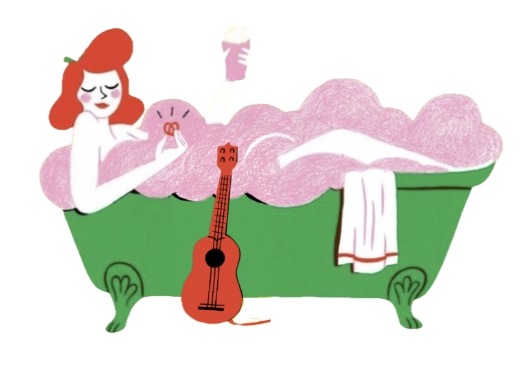

BAR/CAFE COSY A STRASBOURG
où cocktails créatifs, bières artisanales et ambiance chaleureuse se mêlent parfaitement au rythme de musiques envoûtantes !

où cocktails créatifs, bières artisanales et ambiance chaleureuse se mêlent parfaitement au rythme de musiques envoûtantes !